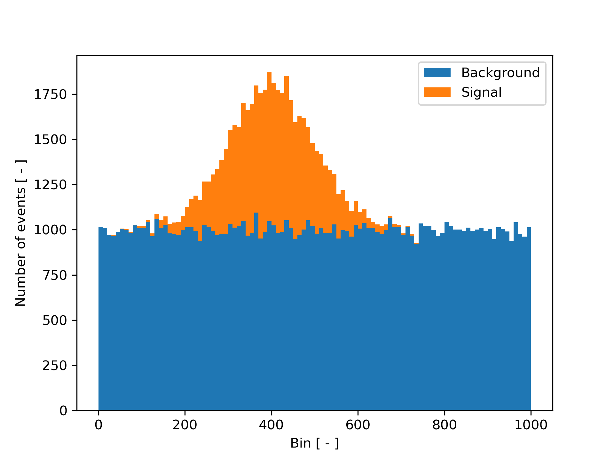
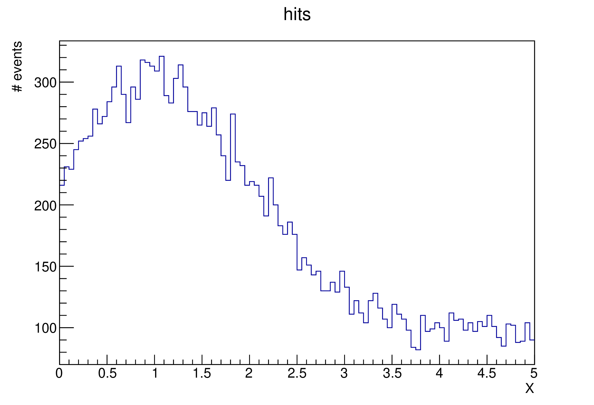
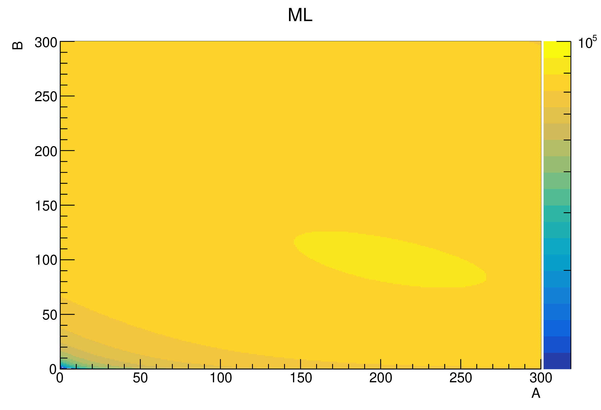

MLM Fit - S/B templates
A typical problem particle physicists face is the signal and background separation. Suppose we have background given by a uniform distribution and data given by a Gaussian distribution. Such a distribution can be fairly simply simulated, provided that we know the number of events and the ratio between signal and background, see the plot bellow. NOTE: now we want to fit histogram = BINNED data!
{kind=link}

In experiments, we can measure the superposition of background and signal. However, we typically do not know the exact production rate of these components - i.e. ratio between them. We would like to find it by fitting - using assumed shapes/distributions = templates. What we search for is their normalizations!
Theory
In the \(k\) bin, we expect the number of events \(D_k\) to be given by the superposition of the signal \(S_k\) and background \(B_k\):
The signal is given by a Gaussian distribution: let us denote the center of the \(k\) bin \(x_k\). The Gaussian distribution centered around \(x_0\) with standard deviation \(\omega\).
The background following the uniform distribution is then simply given as
Therefore, for the expected number of event in the \(k\) bin we have
Note
In this exercise, we suppose we know the Gaussian parameters \(x_0\) and \(\omega\). We are only interested in the amplitudes \(A,B\), which provides us the key to integrals.
Finding the likelihood function
Now, the \(D_k\) we have evaluated is itself subject of statistical fluctuations: even with fixed parameters (\(A,B,x_0, \omega)\)) multiple measurements would yield different results. To be precise, the measured number of events \(N_k\) is given by a Poisson distribution with the expected value \(D_k\) as its mean:
This is the result for one bin. For a set of bins, we have a set of measurements \(\{N_k\}\). As the measurements in different bins are in principle independent, the total pdf is given as
This corresponds to the likelihood function. Subsequently, the logarithm of the likelihood function is
We have neglected the constant term (~ \(\ln N_k!\)) because we want to find the extreme of this function wrt amplitudes \(A,B\).
Homework
Task
- Generate background (uniform distribution) and signal (Gaussian distribution, reasonably select the mean and standard deviation) events and superpose them in one histogram.
- Using the likelihood function above, perform the fit and find the amplitudes \(A,B\). (i.e. loop over possible values and make a 2D likelihood heatmap/histogram)
- Plot the result.
- Calculate the number of Signal events and Background events from the known amplitudes \(A,B\).
Output
Input data:
 
{kind=link}
{kind=link}